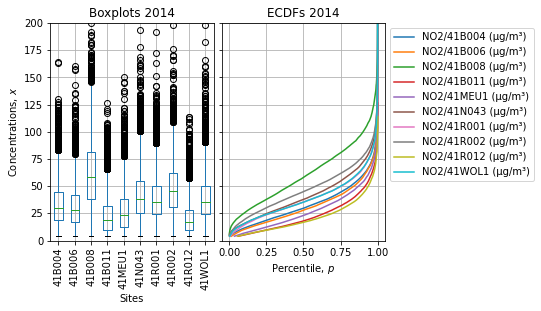
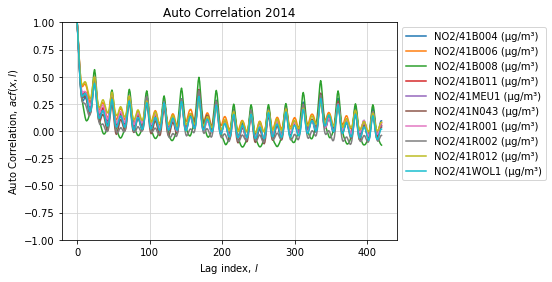
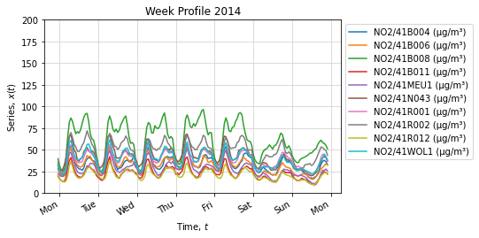
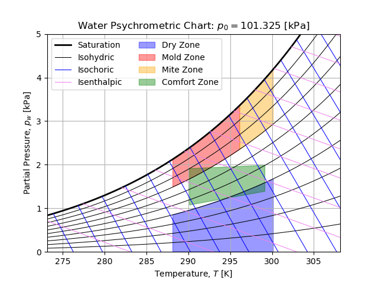
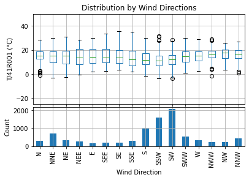
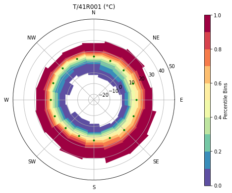

Toolbox¶
Time Series¶
This module provides commodities to handle Time Series. Typical outputs is shown below:
  
-
class
odapi.toolbox.timeseries.TimeSeries[source]¶ Time Series Toolbox Collections of staticmethod useful when dealing with Time Series.
-
static
autocorr(x, fft=True, nlags=420, missing='conservative')[source]¶ This method estimates Auto-Correlation Function for each serie of a DataFrame
-
static
coerce_timezone(t, timezone='UTC')[source]¶ This method coerces a Timestamp to ensure it is Time Zone aware
- Parameters
t (str, datetime.datetime, pandas.Timestamp) – Valid Timestamp (always prefer ISO-8601 standards)
timezone (str) – Valid Time Zone Identifier, defaults to ‘UTC’
- Returns
Timestamp Time Zone aware (converted or localized) for the given Time Zone
- Return type
pandas.Timestamp
-
static
daily(x)[source]¶ Map timestamp onto beginning of the day.
- Parameters
x (datetime.datetime, pandas.Timestamp) – A valid timestamp object.
- Returns
A timestamp mapped to the first day of the day.
- Return type
datetime.datetime, pandas.Timestamp
-
static
ecdf(x, bins=100, p=None, mode='ecdf', rtype='serie', dropna=True)[source]¶ Estimate ECDF of Time Series (groupby allowed)
- Parameters
x (list, numpy.array, pandas.Series, pandas.DataFrame) – Series or DataFrame
bins (int) – Number of bins to create the histogram (bins > 0), defaults to 100
p (list, numpy.array, pandas.Series) – Vector of percentiles to estimate (0 <= p <= 1), defaults to None
mode (str) –
Mode of estimation (ppf or ecdf), defaults to ecdf:
ppf: Estimate ECDF from the PPF of the histogram (scipy based);
ecdf: Estimate ECDF from the inverse monotone function using linear spline (statsmodels based).
rtype (str) –
Control how ECDF is returned (serie or dict), defaults to serie:
serie: Return a Pandas serie with ordered interpolated values and required percentiles as index;
- dict: Return a dict with all intermediates values (distribution, direct and inverse functions,
required percentiles and interpolated values).
dropna (bool) – Drop NaN values from data (ecdf mode is NaN tolerant), defaults True
- Returns
ECDF estimation for the given series
- Return type
pandas.Series, dict or pandas.DataFrame
-
property
events¶ Placeholder for Event Table
-
static
groupby_events(df, events, boolean=False)[source]¶ This method creates a grouper for events w.r.t. DatetimeIndex of the DataFrame
-
static
holidays(year, timezone='CET')[source]¶ This methods generates yearly Belgium Holidays events
-
static
monthly(x)[source]¶ Map timestamp onto beginning of the month.
- Parameters
x (datetime.datetime, pandas.Timestamp) – A valid timestamp object.
- Returns
A timestamp mapped to the first day of the month.
- Return type
datetime.datetime, pandas.Timestamp
-
static
performance(x, limit_area='inside', limit_direction='forward', scenario=None)[source]¶ Assess acquisition performance for Time Series (groupby allowed)
- Parameters
x (list, numpy.array, pandas.Series, pandas.DataFrame) – Series or DataFrame with defined frequency (mandatory)
scenario (str) –
- Type of scenario to evaluate performance (must be in
{None, 'strict', 'forward', 'backward'}), defaults to
None(allow custom performance definition). When set, this setting overwritelimit_areaandlimit_direction. Scenarii are defined as follow:
- strict: Performance is evaluated within the interval from the first to the last observed records
(
limit_area='inside')
- forward: Performance is evaluated within the interval of first observed record to the end of frame
(
limit_area=Noneandlimit_direction='forward')
- backward: Performance is evaluated within the interval of beginning of the frame to the last observed record
(
limit_area=Noneandlimit_direction='backward')
- Type of scenario to evaluate performance (must be in
limit_area (str) – Limit Area switch as defined in pandas.Series.interpolate
limit_direction (str) – Limit Direction switch as defined in pandas.Series.interpolate
- Returns
Acquisition performance statistics (w.r.t acquisition scenario)
- Return type
pandas.Series, dict or pandas.DataFrame
-
classmethod
prepare_parameters(identifiers, start=None, stop=None, span=None, freq=None, floor='1T', key=None, timezone='UTC')[source]¶ This method prepares parameters to setup selection and ease underlying API calls.
- Parameters
identifiers (int, str, sequences, pandas.DataFrame) – Selection of any valid primary keys (single or sequence of it) values available in underlying API. It also can be a metadata frame or a selection of rows from metadata.
start (str, datetime.datetime, pandas.Timestamp) – Timestamp for the lower bound of left-closed selection time range [start, stop)
stop (str, datetime.datetime, pandas.Timestamp) – Timestamp for the upper bound of left-closed selection time range [start, stop)
span (str, datetime.timedelta, pandas.Timedelta) – Timedelta representing the span of the selection time range [stop-span, span)
freq (str) – Time Frequency for interval happening with the time range [start, start+1*freq, …, start+(n-1)*freq, stop)
floor (str) – Time Frequency to floor start timestamp (truncation), defaults to ‘1T’
key (str) – Alternative Primary Key name
timezone (str) – Valid Time Zone Identifier, defaults to ‘UTC’
- Returns
Prepared parameters: identifiers list or frame, start timestamp, stop timestamp and, time ranges equally split by time frequency
- Return type
dict
-
static
reglin(x)[source]¶ This method computes the Linear Regression (OLS) on each serie of a DataFrame
-
static
seasonal(x, **kwargs)[source]¶ This methods performs Seasonal Decomposition on each serie of DataFrame.
\(y(t) = T(t) + S(t) + e(t)\)
-
static
tag_events(df, events)[source]¶ This method tags DataFrame w.r.t to DatetimeIndex based on a events frame
-
static
weekly(x)[source]¶ Map timestamp onto a generic week that keeps day of week unchanged (useful for daily profile). Monday 1940-01-01 to Sunday 1940-01-07 is a good candidate for this mapping.
- Parameters
x (datetime.datetime, pandas.Timestamp) – A valid timestamp object.
- Returns
A timestamp mapped to a day of generic week 1940-01-01/07.
- Return type
datetime.datetime, pandas.Timestamp
-
static
Psychrometry¶
This module provides classes to draw Psychrometric Chart for Water/Air mixture. A typical output is shown below:

-
class
odapi.toolbox.psychro.Mix[source]¶ Mix of Gas and Liquid All quantities are expressed in Standard Units System
-
CSTP¶ alias of
Conditions
-
static
Tmax(f, k, tol=0.005)[source]¶ Find root of the k-isopleth of kind f to get Tmax [K] for Psychrometric Chart Display
-
static
Tmin(f, k, tol=0.005)[source]¶ Solve score function to determine Tmin [K] for Psychrometric Chart Display
-
static
Tmin_score(f, k)[source]¶ Score function for then intersection of the k-isopleth of kind f and Saturation Curve p_sat(T) as a function of Temperature T [K] Score function is designed to determine Tmin [K] for Psychrometric Chart Display
-
static
compute(f, konsts, Tmin, Tmax, ns=101)[source]¶ Compute k-isopleths of kind f for the given Temperature Range (Tmin, Tmax) [K] Temperature Range is refined to real Temperature Boundaries (keep resolution equals, nice display)
-
static
get_limits(f, konsts, Tmin, Tmax)[source]¶ Compute Temperature Boundaries for a given isopleth of a kind f of level k
-
static
pisoh(T, h)[source]¶ Isopleth (Isenthalpic): Iso Specific Enthalpy Curve h(T)=k [J/Kg Gas] as a function of Temperature T [K]
-
static
pisov(T, v)[source]¶ Isopleth (Isochoric): Iso Specific Volume Curve v(T)=k [m^3 Mix/Kg Gas] as a function of Temperature T [K]
-
static
pisow(T, phi=1.0)[source]¶ Isopleth: Iso Relative Humidity (phi) Curve w(T)=k [-] as a function of Temperature T [K] Relative Humidity is defined as the ratio of Liquid Partial Pressure p_w [Pa] and Saturation Pressure p_sat(T) [Pa]: w = p_w/p_sat(T)
-
static
plot(Tmin=None, Tmax=None, ns=101, rtype='domestic', area=True, isow=None, isov=None, isoh=None, kOy=None, ylim=None, Tmode=None, ymode=None)[source]¶ Plot Psychrometric Chart for the given Temperature Range (Tmin, Tmax) [K] Including k-isopleths of each kind (iso-w, iso-v, iso-h) Also perform Units Conversion for readability sake
-
static
pwx(x)[source]¶ Liquid Partial Pressure p_w(x) [Pa] as a function of Vapour Mass Ratio x [Kg Liquid/Kg Gas]
-
Weather¶
-
class
odapi.toolbox.weather.Weather(city=None)[source]¶ This class provides methods to handle Wind, Humidity and Sun series.
Wind¶
This class provides methods to cope with Wind Speed time series. Wind Speed is essentially a vector quantity. Which is generally decomposed into three scalar quantities:
Wind Direction (expressed by convention in azimuthal coordinate with direction associated on where the wind blows from);
Scalar Mean Speed (the mean of the norms of the speed);
Vector Mean Speed (the norm of mean speed).
Those three quantities contains enough information to recreate an average Wind Speed vector and assess Wind Speed stability during the averaging period.
It is important to underline the direction coordinate is by convention not expressed in the trigonometric system but in goniometric system (goniometry is the science of direction finding). The figure below shows a Wind Rose with related Azimuthal coordinates:

The transformation between trigonometric and goniometric system is equivalent to:
\(x_\mathrm{trigo} = 90^\circ - x_\mathrm{gonio}\)
It means goniometric and trigonometric angles are complementary, so they have their origins shifted by a right angle and their coordinates are moving in opposite directions.
Also notice that the transformation between coordinate systems is an involution.
The algorithm used to define Wind Direction bins from Goniometric angles is summarized on the figure below:

Typical outputs is shown below:
 
-
class
odapi.toolbox.weather.Wind[source]¶ This class provides methods to handle Wind series.
-
static
boxplot(data, x, theta='WD/41R001 (°G)')[source]¶ Return distribution by wind direction :param data: :param x: :param theta: :return:
-
static
colormap(cmap='Spectral_r', q=array([0.0, 0.1, 0.2, 0.3, 0.4, 0.5, 0.6, 0.7, 0.8, 0.9, 1.0]))[source]¶ Return a descrete colormap for Percentile Roses :param cmap: Color map theme :param q: Percentile bins boundaries :return: A colormap and a norm associated to percentiles
-
static
coord_bin(order=3)[source]¶ Return coordinate bin measures
Wind Rose decompose as \(n_\mathrm{B} = 4 \cdot 2^{r-1}\) bins where \(r\) is the order of coordinate detail (equals to the number of letters to code the coordinate label).
Coordinate bin thus has a size of \(d_\mathrm{B} = \frac{360}{n_\mathrm{B}}\) goniometric degrees
-
static
coord_index(x, order=3)[source]¶ Convert Goniometric angles (degrees) into Coordinate Index of order r (float to keep nan)
-
static
gonio2trigo_deg(x)[source]¶ Convert Goniometric angles (degrees) into Trigonometric angles (degrees)
-
static
gonio2trigo_rad(x)[source]¶ Convert Goniometric angles (rad) into trigonometric angles (rad)
\(x_\mathrm{trigo} = \frac{\pi}{2} - x_\mathrm{gonio}\)
-
static
rose(data, x, theta='WD/41R001 (°G)', qbins=True, points=False, means=True, cbar=True, q=array([0.0, 0.1, 0.2, 0.3, 0.4, 0.5, 0.6, 0.7, 0.8, 0.9, 1.0]), cmap='Spectral_r', figsize=8, 6)[source]¶ Return polar axe with percentile rose, points and means
- Parameters
data – DataFrame holding time series including Wind Directions
x – DataFrame Key to plot on Percentile Rose
theta – DataFrame Key to identify Wind Directions series in Goniometric Degrees
qbins – Draw Percentile bins
points – Draw experimental points on Rose
means – Draw means on Rose
cbar – Draw color bar beside rose
q – Percentile bins boundaries
cmap – Colormap theme
figsize – Figure Size
- Returns
An axe holding the Percentile Rose
-
static
Humidity¶
Sun¶
-
class
odapi.toolbox.weather.Sun(city=None)[source]¶ This class provides methods to cope with Sun properties.
-
property
city¶ Return city object
-
solar_day(t, mode='dict')[source]¶ This method returns day information for the given timestamp at the given location
- Parameters
t (str, datetime.datetime, pandas.Timestamp) – Timestamp when the information must be computed
mode (str) – Return type (must be in {‘astral’, ‘dict’, ‘serie’}), defaults to dict
- Returns
Day information for the given timestamp
- Return type
astral.sun.sun, dict, pandas.Series
-
property